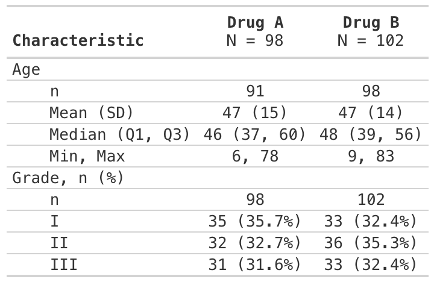

The {crane} package provides supplementary functions to the {gtsummary} specifically for trial reporting in the pharmaceutical industry.
Installation
You can install the development version of crane from GitHub with:
# install.packages("pak")
pak::pak("insightsengineering/crane")Example
This is a basic example which shows you how to solve a common problem:
library(crane)
#> Loading required package: gtsummary
theme_gtsummary_roche()
#> Setting theme "Roche"
tbl <- tbl_demographics(trial, by = trt, include = c(age, grade))
#> Setting theme "Roche"
Each gtsummary table also contains the Analysis Results Dataset (ARD)
# extract ARD from table
gather_ard(tbl)
#> $tbl_summary
#> {cards} data frame: 66 x 12
#> group1 group1_level variable variable_level stat_name stat_label stat
#> 1 trt Drug A grade I n n 35
#> 2 trt Drug A grade I N N 98
#> 3 trt Drug A grade I p % 0.357
#> 4 trt Drug B grade I n n 33
#> 5 trt Drug B grade I N N 102
#> 6 trt Drug B grade I p % 0.324
#> 7 trt Drug A grade II n n 32
#> 8 trt Drug A grade II N N 98
#> 9 trt Drug A grade II p % 0.327
#> 10 trt Drug B grade II n n 36
#> gts_column
#> 1 stat_1
#> 2 stat_1
#> 3 stat_1
#> 4 stat_2
#> 5 stat_2
#> 6 stat_2
#> 7 stat_1
#> 8 stat_1
#> 9 stat_1
#> 10 stat_2
#> ℹ 56 more rows
#> ℹ Use `print(n = ...)` to see more rows
#> ℹ 4 more variables: context, fmt_fn, warning, error